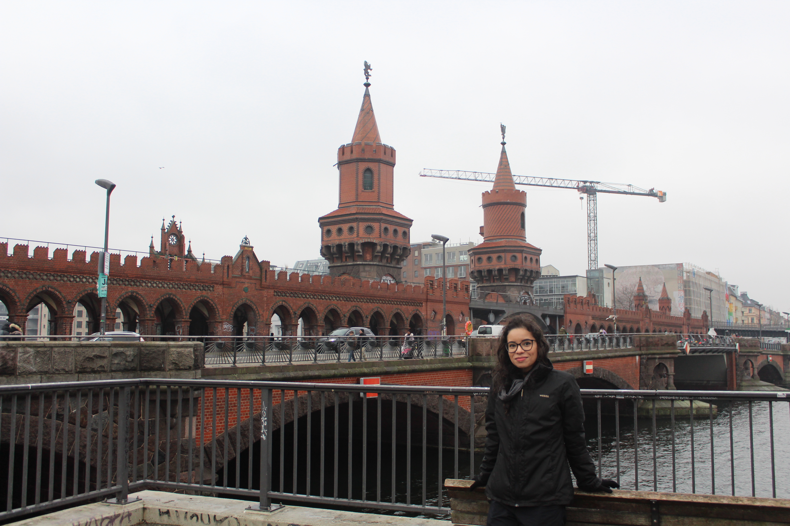

My name is Millena Miranda Franco and I am a PhD candidate in Education at the University of São Paulo (USP), focusing on the history and historiography of education. My research explores the intersection of education and state violence, specifically investigating the political uses of adult literacy, educational initiatives as forms of resistance, and the memory narratives of survivors of the Brazilian civil-military dictatorship. Furthermore, my work extensively involves archival science, with a strong emphasis on the preservation and curation of both physical and digital historical collections.
I hold an MA in Education (2024) with an internship at the Universität Potsdam, a Specialisation in Social Pedagogy (2023), and a BA in Pedagogy (2021) from USP, where I am also currently undertaking undergraduate studies in Law.
From August 2025 to August 2026 I was a Visiting Researcher at the Fundação Getulio Vargas São Paulo Law School (FGV Direito SP), supported by a FAPESP grant to organise and make publicly available documentary archives involving state violence. Between 2019 and 2022, I acted as Pedagogical and Diversity Coordinator at Instituto IRIS, and I have been a Volunteer Researcher at USP's Memory Centre of Education since 2017.